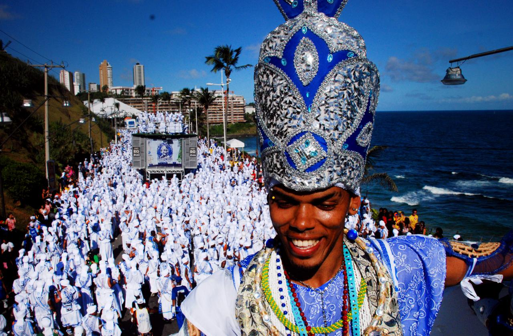
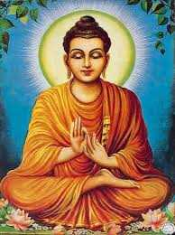

Actividades culturales del evento
Para el evento de ponencias de la UPO contamos con grandes profesionales en diversas ramas de conocimiento y cultura. Entre ellas, hemos traído el carnaval de Salvador de Bahía completo, junto con las carrozas y la música:

También tendremos la oportunidad de escuchar una charla por parte del auténtico Buda: Siddharta Gautama, reencarnado de nuevo en septiembre de 2026. Su primera voluntad fue acudir al gran evento de ponencias de la UPO:
